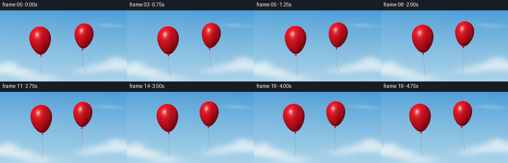
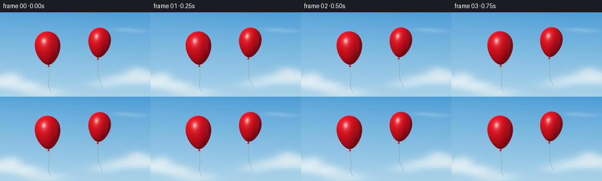

CODING AGENTS AS PIXEL WORLD MODELS
traex/GPT-6.1-Sol · instance_preservation_0036
点击播放 · 原生 RGB 像素
逐轮保存的候选
回放视频、检查图与代码变化。
每份候选均可单独播放。实际图片检查记录在下方工具轨迹中。
候选 01播放与检查图
点击播放 · 原生 RGB 像素


展开代码变化
--- 上一保存版本
+++ 本次保存版本
@@ -0,0 +1,139 @@
+"""Procedural RGB animation of two buoyant red latex balloons."""
+from pathlib import Path
+import json
+import math
+import numpy as np
+from PIL import Image, ImageDraw, ImageFilter
+import artifact_io
+
+ROOT = Path(__file__).resolve().parent
+SPEC = json.loads((ROOT / 'task_spec.json').read_text())
+W, H, SS = SPEC['width'], SPEC['height'], 4
+SW, SH = W*SS, H*SS
+
+
+def make_sky():
+ y, x = np.mgrid[:SH, :SW].astype(np.float32)
+ x /= SS
+ y /= SS
+ frac = y / H
+ top = np.array([73., 155., 214.], np.float32)
+ bottom = np.array([169., 210., 233.], np.float32)
+ out = top + (bottom-top)*frac[..., None]**.85
+ # Broad, soft ambient sunlight, outside the image at upper left.
+ glow = np.exp(-((x+28)/190)**2-((y+10)/125)**2)
+ out += glow[...,None] * np.array([12., 8., 2.])
+ density = np.zeros((SH,SW), np.float32)
+ # Overlapping soft cloud volumes are deliberately far behind the balloons.
+ puffs = [(-8,119,29,9,.9),(15,118,21,9,.72),(38,125,26,8,.75),
+ (19,110,15,9,.55),(49,128,18,7,.52),(76,137,31,8,.7),
+ (207,115,28,8,.7),(237,109,25,10,.9),(264,114,29,10,.7),
+ (232,101,14,8,.45),(177,123,25,7,.45),
+ (211,29,20,3,.18),(230,32,23,3,.16)]
+ for cx,cy,rx,ry,d in puffs:
+ density += d*np.exp(-((x-cx)/rx)**2-((y-cy)/ry)**2)
+ # Gentle detail in the cloud rather than a hard, outlined cartoon silhouette.
+ detail = .96 + .03*np.sin(x*.17+y*.31)+.025*np.sin(x*.38-y*.25)
+ alpha = (1-np.exp(-density*detail*1.25))*.83
+ white = np.empty_like(out)
+ white[:] = (246,249,248)
+ white -= (np.sin(y*.15)*1.8)[...,None]
+ out = out*(1-alpha[...,None])+white*alpha[...,None]
+ return Image.fromarray(np.uint8(np.clip(out,0,255)))
+
+
+SKY = make_sky()
+
+
+def cord(image, cx, cy, angle, ry, t, ident):
+ # The top follows the knot; the loose, light string lags in the breeze.
+ sx = cx-math.sin(angle)*(ry+3)
+ sy = cy+math.cos(angle)*(ry+3)
+ length = 44 if ident == 0 else 48
+ points=[]
+ for f in np.linspace(0,1,100):
+ px = sx + (4.0*math.sin(1.25*t+.8*ident)+2.2)*f*f + 2.3*math.sin(f*7-1.1*t+ident)*f
+ py = sy+length*f
+ points.append((px*SS,py*SS))
+ d=ImageDraw.Draw(image)
+ d.line(points, fill=(119,128,139), width=2, joint='curve')
+ # A thin sunlit filament gives the cord its cylindrical appearance.
+ d.line([(a-.23*SS,b) for a,b in points],fill=(224,222,210),width=1,joint='curve')
+
+
+def balloon(image, cx, cy, rx, ry, angle):
+ margin = 5
+ x0=max(0,int((cx-rx-margin)*SS)); x1=min(SW,int((cx+rx+margin)*SS)+1)
+ y0=max(0,int((cy-ry-margin)*SS)); y1=min(SH,int((cy+ry+margin+6)*SS)+1)
+ yy,xx=np.mgrid[y0:y1,x0:x1].astype(np.float32)
+ dx=xx/SS-cx; dy=yy/SS-cy
+ c,s=math.cos(angle),math.sin(angle)
+ lx=c*dx+s*dy
+ ly=-s*dx+c*dy
+ v=ly/ry
+ taper=1-.18*v-.045*v*v
+ u=lx/(rx*taper)
+ z2=1-u*u-v*v
+ mask=(z2>=0)&(np.abs(v)<=1)
+ z=np.sqrt(np.maximum(z2,0))
+ # Analytic normals of a gently pear-shaped, elliptical latex envelope.
+ nx=u/(rx*taper)
+ ny=(v-u*u*(-.18-.09*v)/taper)/ry
+ nz=z/(rx*.88*taper)
+ norm=np.sqrt(nx*nx+ny*ny+nz*nz)+1e-8
+ nx/=norm;ny/=norm;nz/=norm
+ wx=c*nx-s*ny
+ wy=s*nx+c*ny
+ light=np.array([-.46,-.58,.67],np.float32)
+ light/=np.linalg.norm(light)
+ diffuse=np.maximum(0,wx*light[0]+wy*light[1]+nz*light[2])
+ red=np.empty((*v.shape,3),np.float32)
+ red[...,0]=116+123*diffuse
+ red[...,1]=4+17*diffuse
+ red[...,2]=14+20*diffuse
+ # Reflected sky brightens the grazing edges, as on real glossy latex.
+ fresnel=(1-nz)**3
+ red+=fresnel[...,None]*np.array([20,18,25],np.float32)
+ # Smooth area-light highlight with a restrained white core, not a painted oval.
+ half=light+np.array([0,0,1],np.float32);half/=np.linalg.norm(half)
+ spec=np.maximum(0,wx*half[0]+wy*half[1]+nz*half[2])
+ sheen=spec**24*.30+spec**100*.53
+ red=red*(1-sheen[...,None])+np.array([255,231,222])*sheen[...,None]
+ # Very broad reflected skylight down the opposite shoulder.
+ reflection=np.exp(-((u-.68)/.14)**2-((v+.03)/.6)**2)*.075
+ red=red*(1-reflection[...,None])+np.array([255,150,158])*reflection[...,None]
+ crop=np.asarray(image.crop((x0,y0,x1,y1))).copy()
+ crop[mask]=np.uint8(np.clip(red[mask],0,255))
+ image.paste(Image.fromarray(crop),(x0,y0))
+ # Neck and tied triangular latex end have the same rigid-body pose.
+ def point(x,y):
+ return ((cx+c*x-s*y)*SS,(cy+s*x+c*y)*SS)
+ d=ImageDraw.Draw(image)
+ d.polygon([point(-.65,ry-.3),point(.65,ry-.3),point(.9,ry+1.2),point(-.9,ry+1.2)],fill=(166,13,23))
+ d.polygon([point(0,ry+.6),point(-2.2,ry+3.9),point(.15,ry+3.5),point(2,ry+3.6)],fill=(202,20,32))
+ d.line([point(-.6,ry+1),point(.7,ry+1)],fill=(117,13,25),width=2)
+ d.line([point(-.5,ry+1.8),point(-1.2,ry+3.1)],fill=(236,68,72),width=1)
+
+
+def generate():
+ frames=[]
+ for i in range(SPEC['frames']):
+ t=i/SPEC['fps']
+ image=SKY.copy()
+ poses=[
+ (81+3.1*math.sin(t*.83),61-2.0*t+1.3*math.sin(t*1.45),21.5,28.5,-.055+.035*math.sin(t*1.25)),
+ (169+2.6*math.sin(t*.8+1)-2.6*math.sin(1),51-1.65*t+1.0*math.sin(t*1.35+.7),18.9,25.5,.075+.035*math.sin(t*1.1+.5))
+ ]
+ for j,(cx,cy,rx,ry,a) in enumerate(poses):
+ cord(image,cx,cy,a,ry,t,j)
+ for pose in poses:
+ balloon(image,*pose)
+ image=image.resize((W,H),Image.Resampling.LANCZOS)
+ frames.append(np.asarray(image,dtype=np.uint8))
+ return np.stack(frames)
+
+
+if __name__=='__main__':
+ frames=generate()
+ artifact_io.save(frames, ROOT)
+ print(f'Saved {len(frames)} RGB frames, {W}x{H}, {SPEC["fps"]} fps to {ROOT}')
可观测工具轨迹
实际执行的命令与返回图片。
命令 1exit 0
/bin/bash -lc 'ls -la && cat prompt.txt && cat GENERATION_RULES.md && cat task_spec.json'
命令 2exit 0
/bin/bash -lc 'cat artifact_io.py && cat player_template.html'
命令 3exit 0
/bin/bash -lc "cat > generate.py <<'PY'
\"\"\"Procedural RGB animation of two buoyant red latex balloons.\"\"\"
from pathlib import Path
import json
import math
import numpy as np
from PIL import Image, ImageDraw, ImageFilter
import artifact_io
ROOT = Path(__file__).resolve().parent
SPEC = json.loads((ROOT / 'task_spec.json').read_text())
W, H, SS = SPEC['width'], SPEC['height'], 4
SW, SH = W*SS, H*SS
def make_sky():
y, x = np.mgrid[:SH, :SW].astype(np.float32)
x /= SS
y /= SS
frac = y / H
top = np.array([73., 155., 214.], np.float32)
bottom = np.array([169., 210., 233.], np.float32)
out = top + (bottom-top)*frac[..., None]**.85
# Broad, soft ambient sunlight, outside the image at upper left.
glow = np.exp(-((x+28)/190)**2-((y+10)/125)**2)
out += glow[...,None] * np.array([12., 8., 2.])
density = np.zeros((SH,SW), np.float32)
# Overlapping soft cloud volumes are deliberately far behind the balloons.
puffs = [(-8,119,29,9,.9),(15,118,21,9,.72),(38,125,26,8,.75),
(19,110,15,9,.55),(49,128,18,7,.52),(76,137,31,8,.7),
(207,115,28,8,.7),(237,109,25,10,.9),(264,114,29,10,.7),
(232,101,14,8,.45),(177,123,25,7,.45),
(211,29,20,3,.18),(230,32,23,3,.16)]
for cx,cy,rx,ry,d in puffs:
density += d*np.exp(-((x-cx)/rx)**2-((y-cy)/ry)**2)
# Gentle detail in the cloud rather than a hard, outlined cartoon silhouette.
detail = .96 + .03*np.sin(x*.17+y*.31)+.025*np.sin(x*.38-y*.25)
alpha = (1-np.exp(-density*detail*1.25))*.83
white = np.empty_like(out)
white[:] = (246,249,248)
white -= (np.sin(y*.15)*1.8)[...,None]
out = out*(1-alpha[...,None])+white*alpha[...,None]
return Image.fromarray(np.uint8(np.clip(out,0,255)))
SKY = make_sky()
def cord(image, cx, cy, angle, ry, t, ident):
# The top follows the knot; the loose, light string lags in the breeze.
sx = cx-math.sin(angle)*(ry+3)
sy = cy+math.cos(angle)*(ry+3)
length = 44 if ident == 0 else 48
points=[]
for f in np.linspace(0,1,100):
px = sx + (4.0*math.sin(1.25*t+.8*ident)+2.2)*f*f + 2.3*math.sin(f*7-1.1*t+ident)*f
py = sy+length*f
points.append((px*SS,py*SS))
d=ImageDraw.Draw(image)
d.line(points, fill=(119,128,139), width=2, joint='curve')
# A thin sunlit filament gives the cord its cylindrical appearance.
d.line([(a-.23*SS,b) for a,b in points],fill=(224,222,210),width=1,joint='curve')
def balloon(image, cx, cy, rx, ry, angle):
margin = 5
x0=max(0,int((cx-rx-margin)*SS)); x1=min(SW,int((cx+rx+margin)*SS)+1)
y0=max(0,int((cy-ry-margin)*SS)); y1=min(SH,int((cy+ry+margin+6)*SS)+1)
yy,xx=np.mgrid[y0:y1,x0:x1].astype(np.float32)
dx=xx/SS-cx; dy=yy/SS-cy
c,s=math.cos(angle),math.sin(angle)
lx=c*dx+s*dy
ly=-s*dx+c*dy
v=ly/ry
taper=1-.18*v-.045*v*v
u=lx/(rx*taper)
z2=1-u*u-v*v
mask=(z2>=0)&(np.abs(v)<=1)
z=np.sqrt(np.maximum(z2,0))
# Analytic normals of a gently pear-shaped, elliptical latex envelope.
nx=u/(rx*taper)
ny=(v-u*u*(-.18-.09*v)/taper)/ry
nz=z/(rx*.88*taper)
norm=np.sqrt(nx*nx+ny*ny+nz*nz)+1e-8
nx/=norm;ny/=norm;nz/=norm
wx=c*nx-s*ny
wy=s*nx+c*ny
light=np.array([-.46,-.58,.67],np.float32)
light/=np.linalg.norm(light)
diffuse=np.maximum(0,wx*light[0]+wy*light[1]+nz*light[2])
red=np.empty((*v.shape,3),np.float32)
red[...,0]=116+123*diffuse
red[...,1]=4+17*diffuse
red[...,2]=14+20*diffuse
# Reflected sky brightens the grazing edges, as on real glossy latex.
fresnel=(1-nz)**3
red+=fresnel[...,None]*np.array([20,18,25],np.float32)
# Smooth area-light highlight with a restrained white core, not a painted oval.
half=light+np.array([0,0,1],np.float32);half/=np.linalg.norm(half)
spec=np.maximum(0,wx*half[0]+wy*half[1]+nz*half[2])
sheen=spec**24*.30+spec**100*.53
red=red*(1-sheen[...,None])+np.array([255,231,222])*sheen[...,None]
# Very broad reflected skylight down the opposite shoulder.
reflection=np.exp(-((u-.68)/.14)**2-((v+.03)/.6)**2)*.075
red=red*(1-reflection[...,None])+np.array([255,150,158])*reflection[...,None]
crop=np.asarray(image.crop((x0,y0,x1,y1))).copy()
crop[mask]=np.uint8(np.clip(red[mask],0,255))
image.paste(Image.fromarray(crop),(x0,y0))
# Neck and tied triangular latex end have the same rigid-body pose.
def point(x,y):
return ((cx+c*x-s*y)*SS,(cy+s*x+c*y)*SS)
d=ImageDraw.Draw(image)
d.polygon([point(-.65,ry-.3),point(.65,ry-.3),point(.9,ry+1.2),point(-.9,ry+1.2)],fill=(166,13,23))
d.polygon([point(0,ry+.6),point(-2.2,ry+3.9),point(.15,ry+3.5),point(2,ry+3.6)],fill=(202,20,32))
d.line([point(-.6,ry+1),point(.7,ry+1)],fill=(117,13,25),width=2)
d.line([point(-.5,ry+1.8),point(-1.2,ry+3.1)],fill=(236,68,72),width=1)
def generate():
frames=[]
for i in range(SPEC['frames']):
t=i/SPEC['fps']
image=SKY.copy()
poses=[
(81+3.1*math.sin(t*.83),61-2.0*t+1.3*math.sin(t*1.45),21.5,28.5,-.055+.035*math.sin(t*1.25)),
(169+2.6*math.sin(t*.8+1)-2.6*math.sin(1),51-1.65*t+1.0*math.sin(t*1.35+.7),18.9,25.5,.075+.035*math.sin(t*1.1+.5))
]
for j,(cx,cy,rx,ry,a) in enumerate(poses):
cord(image,cx,cy,a,ry,t,j)
for pose in poses:
balloon(image,*pose)
image=image.resize((W,H),Image.Resampling.LANCZOS)
frames.append(np.asarray(image,dtype=np.uint8))
return np.stack(frames)
if __name__=='__main__':
frames=generate()
artifact_io.save(frames, ROOT)
print(f'Saved {len(frames)} RGB frames, {W}x{H}, {SPEC[\"fps\"]} fps to {ROOT}')
PY
python generate.py
ls -lh pixels.npz index.html inspection.png frames/00.png"保存候选 1 份；完成命令 3 次；可验证图片返回 0 张。原始 API 响应与完整日志保留在本地。